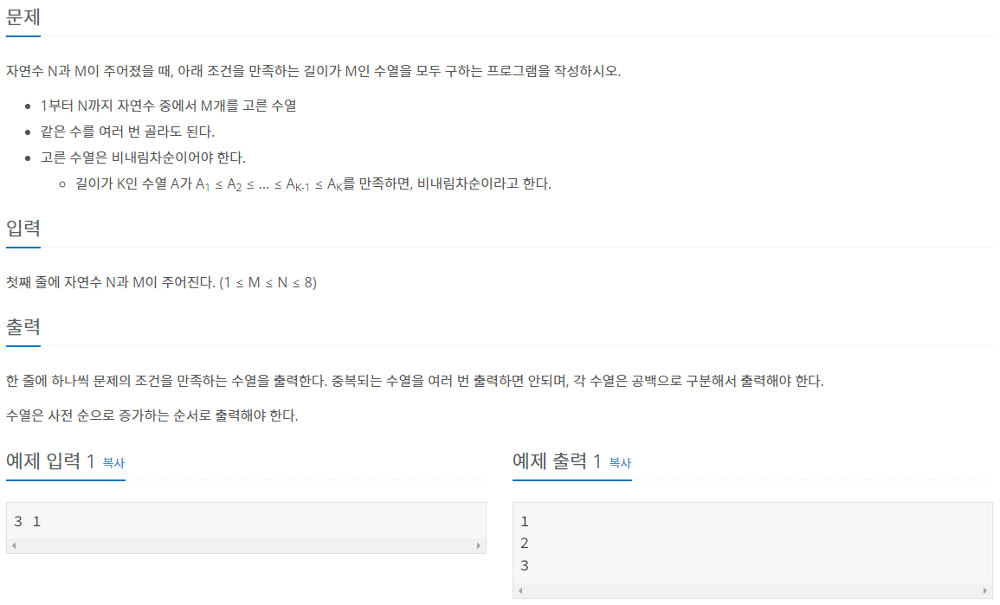
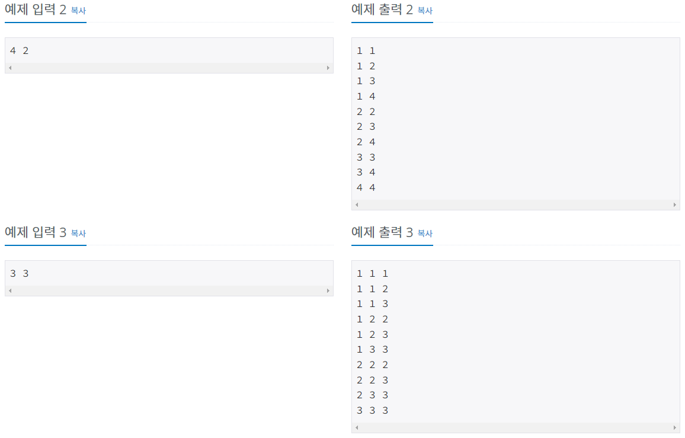
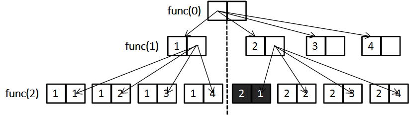

#INFO
난이도 : SILVER3
문제 유형 : 백트래킹
출처 : https://www.acmicpc.net/problem/15652
15652번: N과 M (4)
한 줄에 하나씩 문제의 조건을 만족하는 수열을 출력한다. 중복되는 수열을 여러 번 출력하면 안되며, 각 수열은 공백으로 구분해서 출력해야 한다. 수열은 사전 순으로 증가하는 순서로 출력해
www.acmicpc.net
 
#SOLVE
백트래킹 N과 M시리즈 4번째 문제이다. 문제의 조건은 수열을 사전 순으로 증가하는 순서로 출력해야 한다.
st(시작)변수를 이용해 조건문을 작성하여 가지치기를 수행하면 풀리는 간단한 문제이다.
int st = 1;
if(k != 0) st = arr[k-1];
for(int i = st; i <= n; i++){
arr[k] = i;
recur(k + 1);
}

#CODE
#include <bits/stdc++.h>
using namespace std;
int n, m;
int arr[10];
void recur(int k){
if(k == m){
for(int i = 0; i < m; i++){
cout << arr[i] << " ";
}
cout << '\n';
return;
}
int st = 1;
if(k != 0) st = arr[k-1];
for(int i = st; i <= n; i++){
arr[k] = i;
recur(k + 1);
}
}
int main(void) {
ios::sync_with_stdio(0);
cin.tie(0);
cin >> n >> m;
recur(0);
return 0;
}